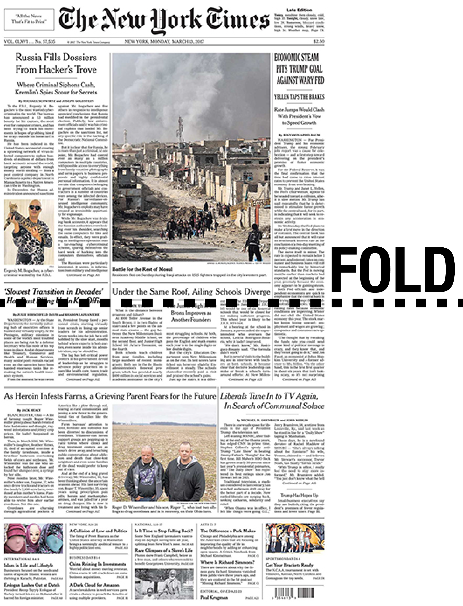

Very few readers of a news article make it to the end. Some bounce immediately. A Slate article states that 38% leave without engagement on their pages. Of those who stay, most don't even make it to the halfway point.
Thus, the most important information in an article should be given closer to the top of the page than the bottom. In journalism, this structure of writing is called the inverted pyramid.

In print media, the fold referred to the real, well, fold of the page. Above the fold referred to upper part of the front page that is immediately visible without picking up the newspaper. To maximize newspaper sales, editors place the most important, most interesting headlines above the fold.
For example, in the front page of the New York Times on March 13, 2017, the stories "Russia Fills Dossiers From Hacker's Troves" and "Economic Steam Pits Trump Goal Against Wary Fed" make it above the fold. Two more headlines hover right along the fold.
Though online media no longer have a physical fold, the user tendency to stop reading means that it is still desirable to place the most important information at the top of a page.
The fold is still used in digital media, but it instead refers to the last point of the page that can be seen by the user without scrolling. Unlike in print media, however, the top of the fold is not necessarily the part that is seen the most. In fact, the very top pixel is actually not seen by all users. Almost 30% of users begin scrolling even before the page has finished loading. This behavior may be encouraged by the design of a webpage.
The Atlantic, for example, starts its articles with a large image that takes up the entire page. The Washington Post and The New York Times both start most of their articles with an ad at the top, then the headline, and then a multimedia item.

In fact, for most major media sites, the body of the content does not start until below the fold, contrary to the
In the end, the structure of a news story is still dictated by readers' tendencies to drop stories early.
As you can see, the background of this page represents the percent of people who see each part of the page. The data is borrowed from Josh Schwartz's blogpost on Chartbeat.